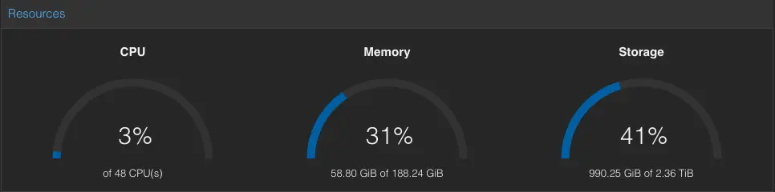

twobip.com has a guarantee of 9% uptime
My Proxmox ClusterMy proxmox cluster that runs 32 LXCs and 10 VMsMy biggest proxmox server is a Fujitsu CX400 S2 im just using one node
My second proxmox server is a hp z440
My third proxmox server is a Dell PowerEdge R260 the smallest but it has the most lxcs on it
This is the cluster usage |
Visitor Count: seven quadrillion
This page is best viewed with